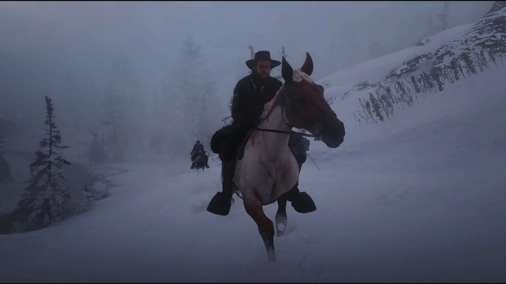

Character · Van der Linde gang
Kieran Duffy
Kieran Duffy is a supporting character of Red Dead Redemption 2 (2018), set in 1899. A former low-ranking member of the O'Driscoll Boys, he joins the Van der Linde gang. Arthur Morgan captures him in the first chapter. Threatened with castration by Dutch van der Linde, he leads Arthur, John Marston and Bill Williamson to an O'Driscoll hideout. There he saves Arthur's life, and he is allowed to stay with the gang, where he looks after the horses. In the fourth chapter, after the party for Jack's return at Shady Belle, he is murdered by the O'Driscolls, who send his mutilated body back to the camp before attacking it.
He is played by Pico Alexander, an American actor from New York.
- Name
- Kieran Duffy
- Born
- Not given in the game
- Died
- 1899, killed by the O'Driscolls after the party for Jack's return; his body is sent back to Shady Belle in "Horsemen, Apocalypses"
- Status
- Deceased; his grave lies in the meadow west of Shady Belle
- Nationality
- American, of Irish descent according to the Red Dead Wiki; his father was an Irishman
- Family
- Father and mother, both dead of cholera when he was young
- Affiliation
- United States Army (former, by his own account), O'Driscoll Boys (former), Van der Linde gang
- Role
- Looks after the gang's horses
- Horse
- Branwen
- Games
- Red Dead Redemption 2
- Voiced by
- Pico Alexander
Biography
Origins
The games give no date of birth for Kieran. The Red Dead Wiki lists him as an American of Irish descent. What is known of his early life comes from his own account, given at the campfire to Sean MacGuire and on the fishing trip with Arthur Morgan. His father, an Irishman, hoped to farm in California. Both his parents died of cholera. Orphaned, he lost his job at a stable. He joined the army, an experience he says went badly. All of the outlaws he rode with next were killed. Fishing and looking after horses are among the very few things his father had time to teach him.
Alone again, he crossed paths with the O'Driscoll Boys, the gang of Colm O'Driscoll and the old rivals of the Van der Linde gang. According to his own account, they gave him the choice of riding with them or dying, which he says was no choice at all. He describes himself as the lowest-ranking member of the gang.
Red Dead Redemption 2 (1899)
Chapter 1: Colter
After the failed ferry robbery in Blackwater, the gang hides in the snow at Colter. In "Old Friends", Dutch van der Linde leads Arthur, Micah Bell, Bill Williamson, Lenny Summers and Javier Escuella southwest to an O'Driscoll camp near a lake, to raid it and find out about a robbery Colm is planning. From a ridge, Arthur and Dutch watch through binoculars as Colm strikes a young man, who rides out of the camp. Colm leaves soon after. The young man is Kieran. The gang wipes out the men left in the camp and drives off their reinforcements. On one of the bodies, Micah finds a plan concerning a train that belongs to Leviticus Cornwall.
On the way back, Dutch spots a lone man standing in the snow near the lake and asks whether he was not the man with Colm. Arthur offers to deal with him, and Dutch tells him to bring the man back alive, since he could be useful. Kieran gets on his horse, Branwen, and flees. After a chase, Arthur ropes him out of the saddle and hogties him. Kieran claims Arthur has the wrong man. On the ride to Colter he first says he does not know his own name, then gives it. He begs to be let go and says he knows nothing real about the O'Driscolls, having ridden with them for only a couple of months. Arthur threatens to break every bone in his body, then forbids him to say another word.
At Colter, Arthur drops him on the ground in front of Dutch and offers to make him talk. Dutch refuses, saying that a beating would only produce lies. He has Bill and Uncle tie the prisoner up somewhere safe and says they will get him hungry first. As he is carried off, Kieran protests that he is not an O'Driscoll and that he hates Colm; Dutch answers with sarcasm. He is kept tied up in the stable of the Colter camp (see Relationships). In "The Aftermath of Genesis", if it is played after "Old Friends", Arthur tells Charles Smith on a hunting trip that they will feed the O'Driscoll nothing but the can of salted offal Simon Pearson gave them. When Charles suggests that Sadie Adler might deal with the prisoner herself, Arthur laughs, then says the man is weak, which makes him all the more useful.
Chapter 2: Horseshoe Overlook
When the gang moves down to Horseshoe Overlook, above Valentine, Kieran comes too, still a prisoner. He spends close to a month tied to a tree in the camp, thin and weak, where several members of the gang taunt him or bring him water (see Relationships). In "Paying a Social Call", Arthur questions him about the O'Driscolls, and Kieran says he knows nothing. Dutch and Bill join them. Dutch orders Bill to geld the prisoner on the spot, and Bill takes up a pair of red-hot tongs. Kieran gives way before Bill can use them: he says that Colm is holed up at Six Point Cabin, an O'Driscoll hideout in Cumberland Forest, and offers to take them there. Arthur sets off with Bill and John Marston, Kieran riding behind John on his horse.
On the ride, Bill tells Arthur that he has slipped throwing knives into his saddle, and, according to the Red Dead Wiki, warns Kieran that if he turns on them he will lose his manhood before his life. Kieran says that the O'Driscolls and the Van der Linde gang are not so different, and John replies that he knows nothing about them. If the player talks to neither John nor Bill, John complains about Kieran's smell after weeks tied to a tree, then brings up Colm's murder of Annabelle, Dutch's lover, and reproaches Kieran for riding with a man who kills women. At Six Point Cabin, Arthur, Bill and John kill the sentries quietly, one of them as he relieves himself against a tree, then defeat the rest of the O'Driscolls in a gunfight.
Arthur then goes into the cabin at the back of the camp, expecting to find Colm there. A last O'Driscoll throws him to the floor as he enters, and Kieran shoots the man dead, saving Arthur's life. Colm is not in the cabin, and Arthur, convinced that Kieran has led them into a trap, points his gun at him. Kieran points out that he has just saved Arthur's life, and Bill backs him. Arthur then tells him he has earned his freedom and can go. Kieran refuses: alone, with Colm's men after him, he would not last long, and letting him go would amount to killing him. Pressed by Bill and John, Arthur agrees to let him join the gang and sends him back to camp with them. Arthur then takes the money Kieran had mentioned from the chimney, and a shotgun from above the fireplace.
From then on, Kieran is a member of the gang, though not a trusted one (see Relationships). According to the Red Dead Wiki, three O'Driscolls met near the hotel in Valentine after this mission recognize Arthur as a man who has been riding with Kieran Duffy. In "Who is Not Without Sin", Kieran is one of the people in camp who comment when Arthur carries a drunk Reverend Swanson back to his tent. At the end of the chapter, after "A Strange Kindness", the gang leaves for Clemens Point, on Flat Iron Lake in Lemoyne, and Kieran moves with it.
Chapter 3: Clemens Point
At Clemens Point, after "The New South", Kieran offers Arthur a fishing trip, a companion activity. The two ride to the shore of Radley's Pasture, on Flat Iron Lake, with Kieran on Branwen, and Kieran remarks that not long ago he was tied to the back of Arthur's horse, begging for mercy. A naked swimmer comes out of the water and tells them about an unusually large fish further along the shore. At the new spot, Arthur can catch the Legendary Bluegill with a special lake lure. Kieran rides back to camp once the fish is caught or, if it is not, after a while, leaving Arthur on the shore.
After the Rhodes ambush in which Sean is killed, Abigail Marston tells Arthur that Jack has disappeared, and the gang concludes that the Braithwaites have taken him. In "Blood Feuds, Ancient and Modern", Dutch, Arthur, Hosea Matthews, John, Charles, Bill, Javier and Lenny ride to Braithwaite Manor, while Micah and Kieran are left behind to guard the camp. According to the character page of the Red Dead Wiki, he is among the gang members present the next morning, in "The Battle of Shady Belle", when the Pinkerton agents Andrew Milton and Edgar Ross come to Clemens Point. Milton offers a deal: if Dutch comes with him, the others get three days to disappear. The gang refuses, and the agents leave. The gang moves to Shady Belle, an abandoned plantation house in the bayou near Saint Denis.
Chapter 4: Saint Denis
Kieran takes no part in the main events of the chapter. At Shady Belle, he goes to Abigail to apologize for failing to see the kidnapping coming (see Relationships). After Jack is brought back from Angelo Bronte's mansion in "Angelo Bronte, A Man of Honor", the gang throws a party. Kieran first watches from a distance, then, encouraged by Karen Jones and Arthur, drinks, and he talks to Arthur once he is drunk (see Relationships). He disappears from the camp right after the party. In "No, No and Thrice, No", if the mission is played after Jack's return, Susan Grimshaw remarks to Arthur on the ride that nobody has seen Kieran for a while.
"Horsemen, Apocalypses" opens with Dutch and Arthur planning the trolley station robbery Bronte has suggested. Dutch notices a strange rider coming into camp. Mary-Beth Gaskill screams when she recognizes Kieran. He is dead on the horse: the O'Driscolls have cut off his head, gouged out his eyes and tied the body so that the head rests in his own hands. A large band of O'Driscolls attacks Shady Belle immediately afterwards. Arthur fires from the balcony, then joins the fight at the front door. Overwhelmed, the gang falls back into the house and barricades the door, and Sadie kills several attackers on her own at the back of the house. The surviving O'Driscolls flee.
After the fight, Dutch has Charles, Reverend Swanson and Pearson bury Kieran, while Arthur and John clear away the bodies of the attackers. According to the Red Dead Wiki, his grave lies in a meadow west of Shady Belle. Arthur's journal entry depends on his honor. With high honor, he regrets that he could not save Kieran, who had once saved his own life, and writes that he will miss him. With low honor, he only describes the beheading, the attack and his dislike of the swamps. In the hours after the battle, several members of the gang talk to Arthur about Kieran's death, among them Bill, Charles, Mary-Beth, Abigail, Molly O'Shea and Micah (see Relationships).
Chapter 6: Beaver Hollow
Colm O'Driscoll is later arrested and sentenced to hang in Saint Denis. In "Goodbye, Dear Friend", because Colm has already escaped the noose twice, Dutch and Sadie decide to attend the execution in disguise and bring Arthur with them. Before the hanging, Dutch reminds Sadie of what each of them has lost because of Colm: her husband, his Annabelle, and Kieran. Dutch, Arthur and Sadie stop an O'Driscoll attempt to free their leader, and Colm is hanged.
Personality
A character page from an official guide, reproduced on the Red Dead Wiki, calls him the O'Driscoll Boys' "Whipping boy and general dogsbody" and says that, after joining Dutch's gang, he "remains somewhat trapped between a rock and a hard place; the O'Driscolls want him dead and his new associates will never fully trust him." It ends: "A scraggly, toady individual of dubious personal hygiene, Kieran has much more of a connection to horses than he does to people."
When Arthur chases him in "Old Friends", Kieran does not fire at him; once lassoed, he begs not to be hurt. His speech is quiet and halting, as in his "p-please" to Arthur in the same mission. He protests each time someone calls him an O'Driscoll (see In his own words). After "Paying a Social Call" he works to earn the gang's trust (see Relationships). According to the Red Dead Wiki, during the Clemens Point chapter he keeps to the horses by day and sits on his own at night.
In his own words
Carried away by Bill and Uncle at Colter at the end of "Old Friends", he shouts: "No, I ain't an O'Driscoll, mister. I hate that feller." The Red Dead Wiki opens its page on him with a line from his campfire talks about his past: "Now... I'm in with you... and all I know is folks all seem to die... and... I still love horses." Riding out to fish with Arthur during the Clemens Point chapter, he remarks: "Who'd've thought it? Wasn't that long ago I was tied to the back of your horse while begging for mercy. Now we're off fishing together."
Names
He gives his full name when Arthur asks it in "Old Friends": "Duffy. Kieran Duffy." Long after he joins, members of the gang keep calling him O'Driscoll, Arthur included, and Arthur also calls him boy in two of his antagonize lines. The Red Dead Wiki's infobox lists Kieran O'Driscoll and Kieran van der Linde as other names, without a source. According to the wiki, Kieran and Duffy are anglicized forms of the Irish Ciarán and Ó Dubhthaigh, which it glosses as the little dark one and the dark one.
Appearance
The guide's portrait shows an unshaven man with graying stubble, light eyes and dark hair to the shoulders, in a battered wide-brimmed hat, a green scarf, a striped shirt and a long, worn leather coat over a cartridge belt and tall boots. Stripped of his coat and guns as a prisoner, he wears only his undershirt, trousers and boots. By the Clemens Point chapter he wears a dark blue shirt and tie with suspenders, and the hat he wore at Colter, according to the wiki.
Relationships

Arthur Morgan
Arthur lassoes Kieran in "Old Friends", and Kieran saves his life at Six Point Cabin in "Paying a Social Call" (see Biography). According to the Red Dead Wiki's camp events page, Kieran, tied up in the stable at Colter, tries to frighten Arthur by saying the O'Driscolls will come looking for him, and learns that his group is not the first the gang has wiped out; later he asks when he will be let go and gets only more taunts. At Horseshoe Overlook, still tied to his tree, he asks Arthur about a ransom and complains of hunger. Among Arthur's lines when he antagonizes Kieran, the wiki's quote list gives: "Hey, O'Driscoll, I reckon you must be in the wrong camp... Oh, I forgot, you sold them out to save your own skin... You're our boot boy now."
After he is freed, Kieran comes to thank Arthur for sparing him and to assure him that he is not a bad person; according to the camp events page, Arthur answers after a pause with thanks for the shot at Six Point Cabin. Drunk at the party for Jack's return, Kieran tells Arthur that the gang knows how to party and that, had he stayed an O'Driscoll, he would be dead; Arthur answers that they would both have died at Six Point Cabin. His death and Arthur's journal entry about it are told in the Biography.

Mary-Beth Gaskill
At Horseshoe Overlook, right after Karen refuses Kieran a drink, Mary-Beth brings him water; he thanks her, and she tells him Karen is nice really. Once he is free, he twice joins her where she reads east of camp. In one scene he tells her she is very pretty and she finds him sweet; in another she asks whether he can read, he admits he never learned, and she suggests someone could teach him, which flusters him into leaving.
When Kieran goes missing after Jack's party, Mary-Beth asks Pearson and Miss Grimshaw where he is, and neither knows. She is the one who screams when she recognizes his body in "Horsemen, Apocalypses" (see Biography). Afterward, according to the wiki, she tells Arthur that he was a gentle soul who did not deserve this, calls his killers pigs and asks Arthur to make them pay, which he promises to do if he can; she also admits she had a soft spot for him.

Bill Williamson
Bill and Uncle tie Kieran up at Colter, and in "Paying a Social Call" Dutch orders Bill to geld him with hot tongs; Bill and John then persuade Arthur to keep him (see Biography). Back at Horseshoe Overlook, Bill pins Kieran down near Pearson's pot and threatens him with the same tongs before letting him go. During the Clemens Point chapter he pushes Kieran to sit and drink with him; Kieran takes a drink when threatened. Pressed to drink more, he says he must stay sober to look after the horses and leaves, to Bill's disappointment. If Arthur is nearby, Kieran runs off while Bill begs him to stay. According to the Red Dead Wiki, after Kieran's death Bill says he was almost starting to like him and reminds Arthur that Kieran saved his life.

Karen Jones
At Horseshoe Overlook, Karen tells the bound Kieran she thought O'Driscolls ate babies but that he looks like one; he answers that he is a baby and not an O'Driscoll, asks her for water, and she refuses and throws her cigarette at him. Once he is free, Kieran stops by the poker table and tells Karen he is still alive, at least so far. Karen asks Arthur to reassure him, and Arthur warns him instead to watch himself. Karen tells Kieran that Arthur is joking and that the men only act tough. At the party for Jack's return she urges him to drink; he says he might have a little, and later insists he will just watch.

Sean MacGuire
At the party for Sean's return, Arthur can warn Kieran, then a prisoner or a camp hand depending on the order of missions, that Sean will make his life hell once he learns Kieran was an O'Driscoll. Sean later calls him over by Pearson's kitchen, head-butts him on the nose and explains that an old neighbor in Donegal was also called O'Driscoll and that he could not stand him either. At the campfire Sean loses his temper because everyone mispronounces Colm's first name and keeps threatening Kieran until he says it the Irish way. Kieran objects that Colm says his own name the American way; Wikipedia's list of the game's characters, citing Game Rant and PC Gamer, notes that Sean is the only character to say the name correctly. In other campfire talks Kieran tells Sean about Colm, why he joined the O'Driscolls, his life before them and his love of horses.

Javier Escuella
At Horseshoe Overlook Javier tells Kieran, who is tending a horse, that once an O'Driscoll, always an O'Driscoll. Kieran answers that he has proved himself. Javier replies that all he proved is how fast he betrays his friends, and that he will keep an eye on him, whatever Dutch thinks. Arthur can add that they are all watching, and Kieran reminds them that he saved Arthur's life.

Tilly Jackson
At Horseshoe Overlook Kieran asks Tilly for water, and she gives him some, saying it is his lot. When he goes on to ask for a blanket and a dry pair of boots, she asks sarcastically whether he would like a bottle of champagne with them. After his death, according to the Red Dead Wiki, she says she thinks he was always living on borrowed time.

Sadie Adler
At Horseshoe Overlook Sadie holds out a plate of food to the bound Kieran, then dumps it on the ground in front of him and walks away; the Red Dead Wiki's camp events page reads the gesture as a reference to her husband, killed by the O'Driscolls and left in the dirt. If Arthur sees the scene, he laughs. One of Arthur's antagonize lines in the wiki's quote list tells Kieran that Sadie wants to cut off his manhood and feed it to her horse.

Jack Marston
At Horseshoe Overlook Jack throws rocks at Kieran while he brushes a horse, and Kieran asks him to stop. Asked why by his mother, Jack says Kieran is an O'Driscoll and she always told him they were bad; Abigail makes him stop, and Arthur can compliment him on the throw. His apology after Jack's kidnapping is told under Abigail Marston.

Abigail Marston
At Shady Belle, before Jack is brought back, Kieran comes to the dominoes table to apologize to Abigail: he saw the Braithwaites come to camp, but knew that Arthur and Hosea had dealings with them and did not think they would take Jack. He tells her he would gladly give his life for Jack's and apologizes again. After his death Abigail is among those who talk about it with Arthur; according to the Red Dead Wiki, she is shocked, and Arthur puts it down to bad business.

Colm O'Driscoll
Kieran rode with Colm's gang before his capture; the scene in which Colm berates him at the Ewing Basin camp opens his story in "Old Friends" (see Biography). According to the Red Dead Wiki, Kieran describes Colm in camp as a man who makes you feel the sun is shining when he speaks kindly and the devil is upon you when he is angry. Colm's men kill Kieran, and Colm's hanging follows (see Biography).

Dutch van der Linde
Dutch has Kieran tied up at Colter and threatens him with castration in "Paying a Social Call" (see Biography). According to the Red Dead Wiki, Dutch, like Arthur, does not believe Micah's claim about Kieran after his death (see Micah Bell). Dutch has him buried, and names him among the gang's losses before Colm's hanging (see Biography).

John Marston
John rides to Six Point Cabin with Arthur, Bill and Kieran in "Paying a Social Call" and, with Bill, persuades Arthur to let Kieran join the gang (see Biography).

Charles Smith
According to the Red Dead Wiki, Charles is put in charge of the horses and of guarding Kieran at Colter. In a camp scene, after John says Bill dislikes anyone tougher and smarter than him, Charles adds "except for maybe that Kieran". After Kieran's death Charles says he was starting to like him, and he is one of the three men Dutch tells to bury him (see Biography).

Micah Bell
Micah and Kieran are the two men left to guard Clemens Point in "Blood Feuds, Ancient and Modern" (see Biography). After Kieran's death Micah is the only member of the gang to speak ill of him, suggesting to Arthur that Kieran had been trying to go back to the O'Driscolls.

Molly O'Shea
After Kieran's death Molly speaks to Arthur of both deaths, Kieran's and Sean's, and of the fact that Dutch is not speaking to her; according to the Red Dead Wiki, she asks Arthur how any of this can be all right.

Susan Grimshaw
Miss Grimshaw does not know where Kieran is when Mary-Beth asks her. She also remarks on his absence in "No, No and Thrice, No" (see Biography).

Simon Pearson
When Mary-Beth asks Pearson where Kieran is, he does not know and tries to make small talk about a shark he once saw eat several men. He is one of the three men who bury Kieran (see Biography).

Orville Swanson
Kieran is among those who comment when Arthur carries a drunk Swanson into camp in "Who is Not Without Sin" (see Biography). Swanson is one of the three men who bury Kieran (see Biography).

Uncle
At the end of "Old Friends", Dutch has Bill and Uncle tie Kieran up (see Biography). Uncle is among those who can talk to Arthur about Kieran's death.
Skills, weapons and horses
Horses and camp work
Wikipedia's list of the game's characters calls him a stable boy. Once freed, he spends most of his time in camp with the gang's horses: he brushes them and carries saddles at Horseshoe Overlook. A Red Dead Wiki gallery caption also shows him cleaning the tables at Clemens Point. In chapter 3 he is one of the camp members with an item request for Arthur: two burdock roots for the horses, a plant found near water, one of the deliveries that count toward the Errand Boy trophy.
Fishing
Kieran considers himself a good fisherman, according to the Red Dead Wiki. His fishing trip with Arthur is told in the Biography and listed under Missions.
Weapon and horse
He is unarmed while a prisoner. From "Paying a Social Call" he carries a custom Cattleman revolver, which the Red Dead Wiki describes as blued steel on an iron frame with a bone grip; the game does not show where he got it. His horse is Branwen, a flaxen roan Tennessee Walker stallion, according to the wiki's page on the horse. He rides it when he tries to escape Arthur in "Old Friends" and on the fishing trip; the horse comes back to him at Horseshoe Overlook after he joins the gang. The wiki adds that a horse closely resembling Branwen can be bought at the Tumbleweed stable in 1907 and in Red Dead Online.
Missions
The English Red Dead Wiki lists five story missions of Red Dead Redemption 2 for Kieran, from his capture to the attack that follows his death, and one companion activity. The French Red Dead Wiki adds three more. The table below also includes the missions in which he is only talked about.
Red Dead Redemption 2, story missions
| Mission | Chapter | Kieran's role |
|---|---|---|
| Old Friends | 1. Colter | Captured. Seen with Colm at the O'Driscoll camp, he is chased down and lassoed by Arthur on the way back, then tied up at Colter on Dutch's orders. |
| The Aftermath of Genesis | 1. Colter | Mentioned, if the mission is played after "Old Friends". Arthur and Charles talk about the prisoner while hunting. |
| Eastward Bound | 1. Colter | Listed by the French Red Dead Wiki only. The English mission page mentions him in a single trivia note that gives no source. |
| Money Lending and Other Sins I | 2. Horseshoe Overlook | Listed by the French Red Dead Wiki only; the mission page and its transcript do not mention him. |
| Paying a Social Call | 2. Horseshoe Overlook | Mission giver. Threatened with castration, he leads Arthur, John and Bill to Six Point Cabin, shoots the O'Driscoll who jumps Arthur in the cabin and is allowed to join the gang. Reward for the player: 110 dollars, a throwing knife and a Double-Barreled Shotgun. |
| Who is Not Without Sin | 2. Horseshoe Overlook | At camp. He is one of the gang members who comment as Arthur carries a drunk Reverend Swanson to his tent. |
| The New South | 3. Clemens Point | Listed by the French Red Dead Wiki only. |
| Blood Feuds, Ancient and Modern | 3. Clemens Point | Stays behind with Micah to guard the Clemens Point camp while the others ride to Braithwaite Manor. |
| The Battle of Shady Belle | 3. Clemens Point | Present at camp, according to the character page, when Milton and Ross come to Clemens Point. He moves with the gang to Shady Belle. |
| No, No and Thrice, No | 4. Saint Denis | Mentioned, if the mission is played after Jack's return. Susan Grimshaw notes that he has not been seen for a while. |
| Horsemen, Apocalypses | 4. Saint Denis | Killed before the mission. His mutilated body is sent into the Shady Belle camp on a horse, just before the O'Driscolls attack. Dutch has him buried afterwards. |
| Goodbye, Dear Friend | 6. Beaver Hollow | Mentioned. Before Colm's hanging, Dutch names him to Sadie among those the gang has lost because of Colm. |
Red Dead Redemption 2: companion activity and camp request
| Activity | Chapter | Kieran's role |
|---|---|---|
| Fishing (Kieran Duffy) | 3. Clemens Point | Activity giver. He takes Arthur fishing at Radley's Pasture, on Flat Iron Lake, where a naked swimmer tells them about a giant fish, the Legendary Bluegill. Available after "The New South". |
| Item request | 3. Clemens Point | He asks Arthur for two burdock roots for the camp horses. Chapter 3 only; it counts toward the Errand Boy trophy. |
Notable people Kieran kills
The Red Dead Wiki credits Kieran with a single killing.
| Name | Mission | Circumstances |
|---|---|---|
| Unnamed O'Driscoll | Paying a Social Call | Shot in the stomach as he holds Arthur on the floor of the cabin at Six Point Cabin. |
Quotes
The lines below are given as spoken in the game, in the original English, with the mission and the person addressed.
The capture
You got me mixed up with someone else.
Old Friends (RDR2, chapter 1), to Arthur, who has just hogtied him and tells him he is coming alongIt's Kieran.
Old Friends (RDR2, chapter 1), after first claiming not to know his own name. Once he has given his surname, Arthur answers: "Well, I ain't gonna lie to you... this is a real bad day for you, Kieran Duffy."Why? What are you gonna do to me?
Old Friends (RDR2, chapter 1), to Arthur, who replies that it is something he will not like and advises him to save his breath for screamingCome on, mister, p-please!
Old Friends (RDR2, chapter 1), tied across Arthur's horse on the ride to ColterI've only been running with them a couple of months. I don't know nothing real about them, honest!
Old Friends (RDR2, chapter 1), to Arthur, who answers: "Are you trying to test me, is that it? Because I will break every bone in your body."Okay, okay!
Old Friends (RDR2, chapter 1), after Arthur forbids him to say one more word. Arthur replies: "That's two bones, right there."Don't hurt me, please.
Old Friends (RDR2, chapter 1), as Arthur carries him into the Colter camp. Arthur answers: "Oh, don't worry, they're real nice."
In the gang
Who's that? The Reverend?
Who is Not Without Sin (RDR2, chapter 2), as Arthur carries a drunk Reverend Swanson through camp
Said to him and about him
See? This is why you're an O'Driscoll, O'Driscoll. Colm's a sneak thief and a killer... Dutch is... Dutch is more like a teacher.
John Marston to Kieran, Paying a Social Call (RDR2, chapter 2), on the ride to Six Point Cabin (quote box of the mission page)You lost your husband. I lost my darling, Annabelle. That poor boy, Kieran. We've all lost something because of Colm. And that is why we will shepherd him to eternity.
Dutch van der Linde to Sadie Adler, Goodbye, Dear Friend (RDR2, chapter 6), before Colm's hanging (quote box of the mission page)
Development and performance
Casting
Kieran is played by Pico Alexander, an American actor born in New York City on June 3, 1991. According to Wikipedia, his parents, Magdalena Deskur and the cinematographer Lukasz Jogalla, are Polish immigrants from Krakow. He attended Fiorello H. LaGuardia High School and earned a BFA in acting at Rutgers University. His film roles include A Most Violent Year (2014), Indignation (2016), War Machine and Home Again (2017) and The Sky Is Everywhere (2022). On television he had a recurring role in Catch-22 (2019) and played Henry "Ship" Shipley in the second season of Dickinson (2021). Wikipedia sums up his part in Red Dead Redemption 2 (2018) as Kieran Duffy, "a captured member of a rival gang". No interview in which he discusses the role has been found.
Rockstar recorded the performances of the cast with motion capture, with cameras capturing the actors' facial expressions for animation, according to Wikipedia's list of the game's characters. The same page, citing Vulture, says recording began in 2013 and lasted 2,200 days, with 1,200 actors, 700 of whom share the game's 500,000 lines of dialogue.
Cut content
According to the Red Dead Wiki, the game files contain a cut hair model, shirt, coat and neckerchief for Kieran. They also hold an unused camp encounter at Colter, in which Kieran, held in the stable, tries to persuade Jack to fetch him food, and Arthur steps in and threatens to cut his throat if he speaks to the boy again. The wiki also reports that in IGN's playthrough of the game, shown a few months before release, Kieran was captured just before "Paying a Social Call" rather than at the end of chapter 1; the wiki notes that this order would explain how he knows where Colm is after weeks as a prisoner.
Reception
Game Informer ranking
In Game Informer's staff ranking of the 24 members of the Van der Linde gang, published on 27 December 2018, Kieran comes 20th. The staff wrote that, as a former O'Driscoll trying to find his place in the gang, "there's a lot of pathos in his struggle for acceptance", and that "that journey is cut short just as everyone starts to warm up to him, raising the stakes to take down Colm O'Driscoll." Wikipedia's list of the game's characters cites the same ranking for his description as a lowly member of the O'Driscoll gang.
Other media and legacy
Marketing
Kieran was left out of the series of character portraits and descriptions that Rockstar posted on Twitter on September 6, 2018, and that The Hollywood Reporter reproduced the next day. He is also absent from the composite of 23 gang members' official art designs that illustrates Wikipedia's list of the game's characters. The Red Dead Wiki notes that, apart from Davey Callander, Cleet and Joe, he is the only gang member seen alive in the game who did not get promotional artwork with a quote of his own.
Trivia
- The O'Driscoll character models and the prostitutes seen at Six Point Cabin in "Paying a Social Call" appear in that mission only. When Arthur comes back to the hideout later, ordinary O'Driscolls occupy it, and a new gunfight is possible until chapter 6, when the place is empty.
- If Arthur later returns alone to the spot where he and Kieran met the swimmer and starts fishing, the man appears again and tells him about another unusually large fish. According to the activity page of the Red Dead Wiki, a giant largemouth bass can then be caught in the same area.
- In his fishing trip, the naked swimmer only mentions the giant fish if Arthur greets him. If Arthur insults him instead of greeting him, the swimmer says nothing about the fish, and Kieran finds the second spot on his own.
- The Red Dead Wiki classes the fishing trip, a chapter 3 activity, as missable content.
- His camp scenes tied to the tree stop for good after "Americans at Rest", and all his camp scenes end after "Angelo Bronte, A Man of Honor".
- Kieran's grave is one of those that count toward the Paying Respects trophy.
Gallery
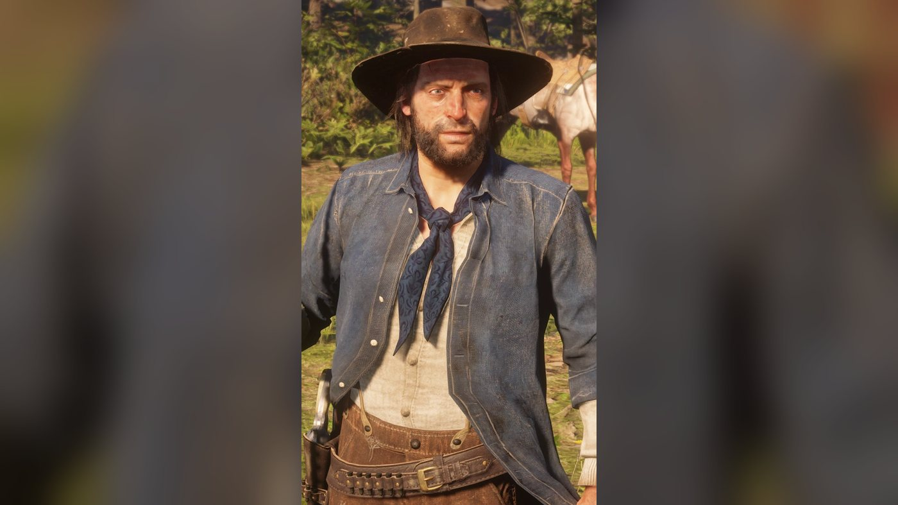
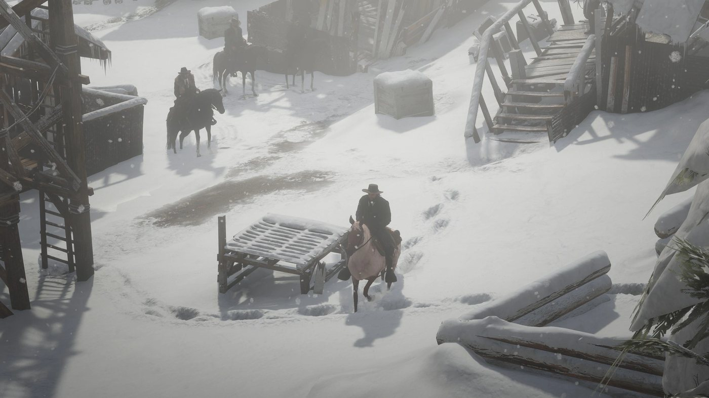
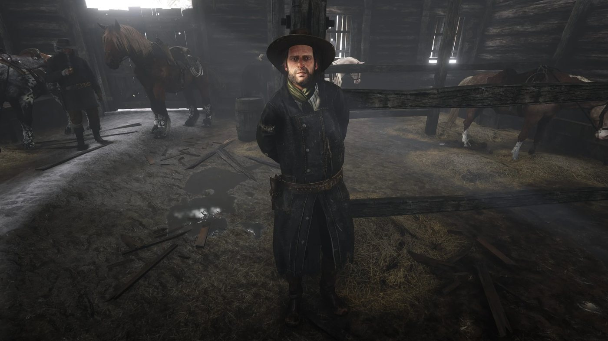
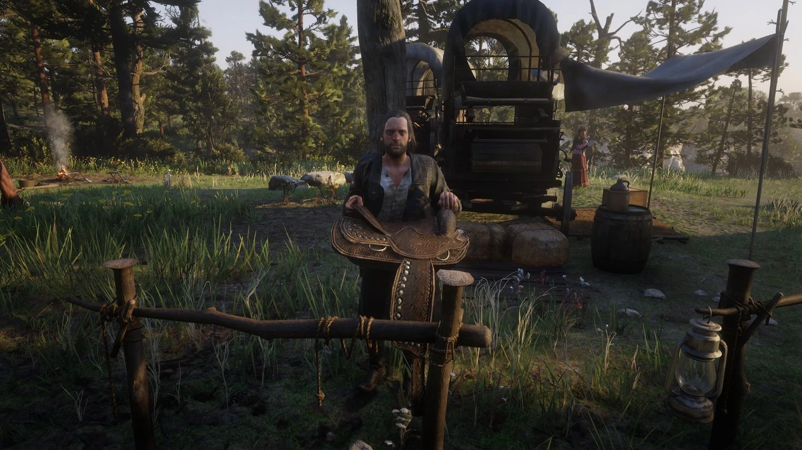
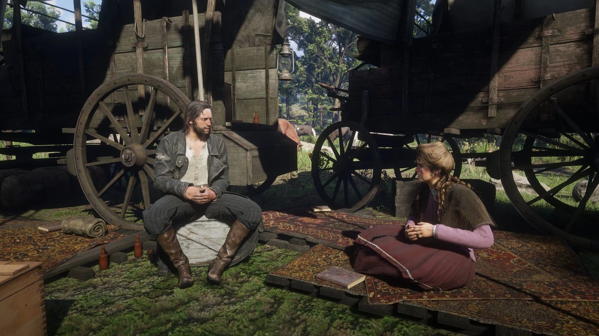
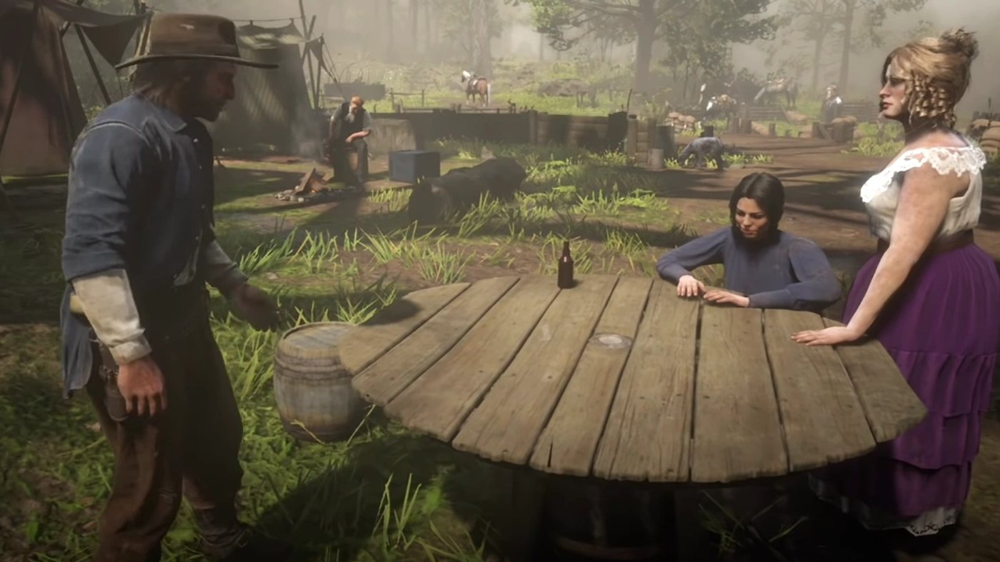
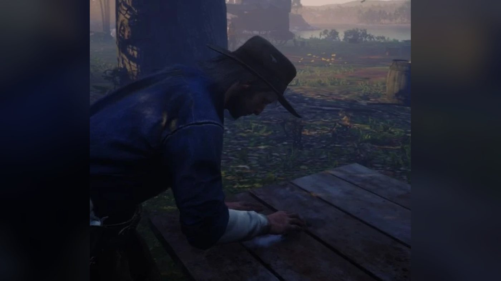
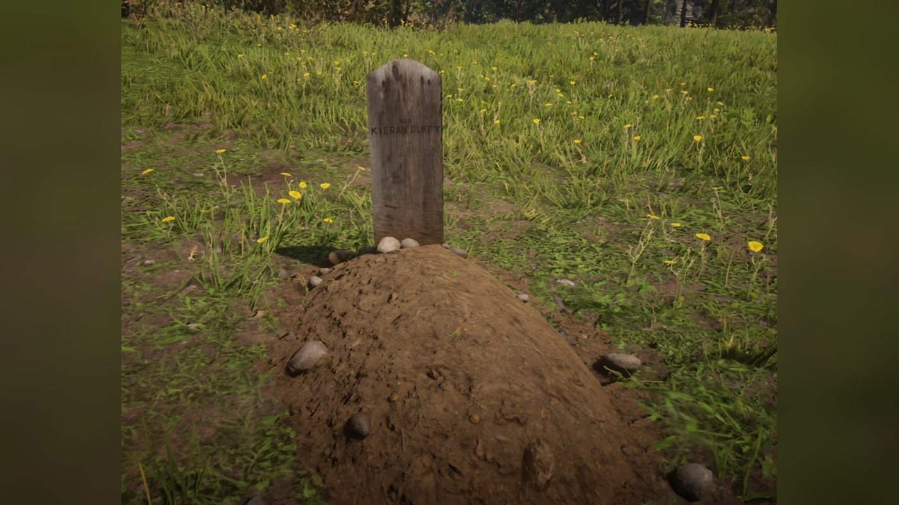
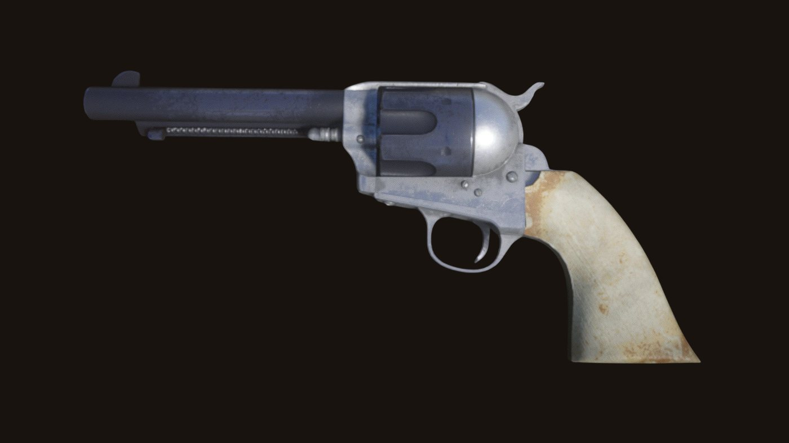
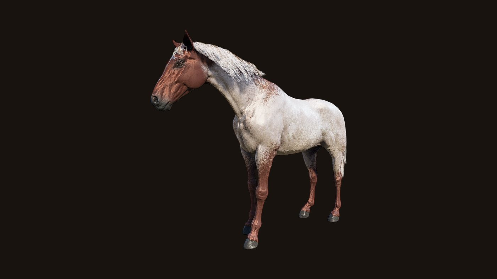